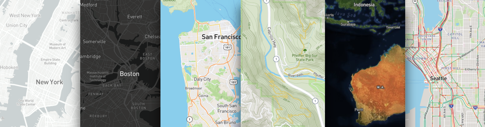

Mapbox Workshop Geospatial Innovation Facility
Hi, we're Colleen and Mal
from Mapbox
This workshop will cover:
- What's possible with Mapbox
- Make a map
- Add some interactivity to it
- Talk about geospatial analysis in the browser
Mapbox wants to change the way people navigate cities and understand
our planet.
We do this by providing building blocks for integrating brand and location into any mobile or online app.
Maps
Search
Navigation

Maps.
 Search.
Search.Navigation.
Here's what you'll be making today.
Here's what you'll need to get started:
Define your color palate:
Add interactivity using Mapbox GL JS, our JavaScript library
What we will be building:
- Display showing the number of households per facility when you hover over each district
- A legend to describing what the colors represent
Use Turf.js to do spatial analysis in the browser
thank you.
happy mapping!